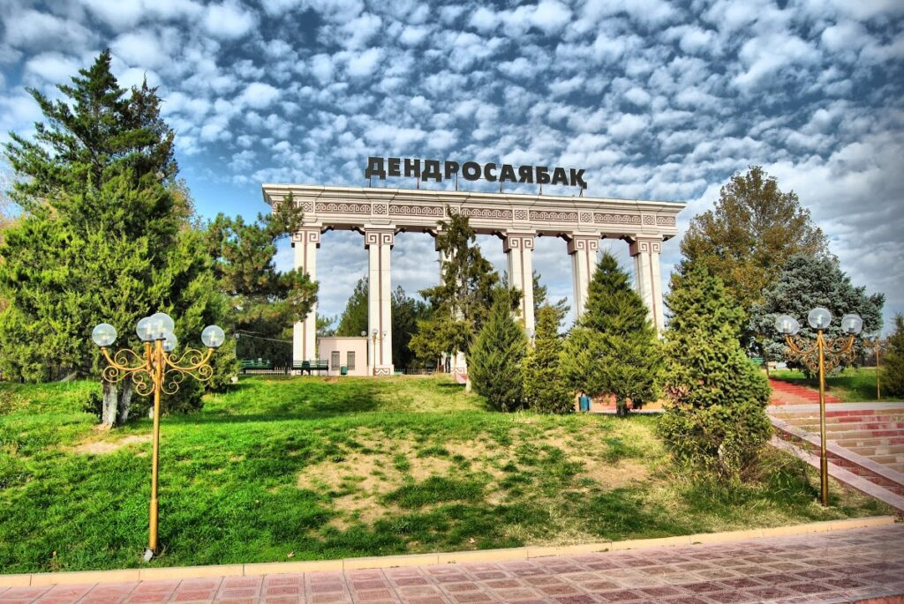

Город Шымкент расположен посреди степи словно оазис, под палящими лучами горячего южного солнца. Это самый крупный по занимаемой площади город Казахстана. Шымкент – один из древнейших городов Казахстана с развитой инфраструктурой, с высоким туристическим потенциалом, расположенный на перекрестке Великого Шелкового пути. Город привлекает своей тёплой солнечной погодой, вкусным шашлыком и пловом, южным гостеприимством. Здесь функционируют 10 парков, 7 музеев, 25 социально-культурных объектов, 5 театров и 18 комплексов отдыха, в том числе дендропарк, мавзолеи Ибрагим-ата и Карашаш-ана.
Шымкентский Дендропарк
Шымкентский дендропарк был разбит в 1979 году на месте бывшей городской свалки. В годы своего расцвета он занимал 151 гектар и насчитывал 500 тысяч деревьев и 1360 видов кустарников, много редких и экзотических пород, которые нигде больше в Казахстане не произрастают. Дендропарк имеет статус особо охраняемой территории регионального значения.
Дендропарк — одно из любимых мест отдыха горожан и гостей города, "Легкие Шымкента", где проводят свадьбы, различные мероприятия и пикники. А любители спорта, каждое утро устраивают занятия по йоге либо пробежки.
Здесь можно лицезреть великое множество самых разнообразных представителей флоры, увидеть павлинов, белок, пятнистых оленей. В центре дендрария находится живописное озеро со станцией катамаранов, а в его водах обитают толстолобики из семейства карповых. Площадь парка огромна, поэтому на его территории есть прокат велосипедов, для которых даже предусмотрена специальная дорожка.
Шымкентский государственный дендрологический парк можно без сомнения назвать драгоценной жемчужиной края и настоящей достопримечательностью Казахстана. Если вы хотите отдохнуть от городской суеты, то посещение дендропарка - наилучшее решение.

ПАРК ИМЕНИ АБАЯ
Парк имени Абая - любимое место отдыха многих жителей города Шымкент.Красивые аллеи, большой мемориал Славы, посвященный воинам-победителям Великой Отечественной войны, фонтан, малые архитектурные формы, памятники - для отдыха шымкентцев и гостей города сделано тут многое.
Территория парка составляет 52 гектара. Культурно-историческая зона – в северной части парка. Главное отличие этого парка от всех остальных – отсутствие в нем однолетних растений. Аллеи парка Абая ежегодно пополняются новыми деревьями.Прогулка в парке Абая – прекрасный вариант, для того чтобы с пользой и удовольствием провести время в городе Шымкент.
Интересные факты про Шымкент
1. Шымкентские улицы — самые длинные в стране.
Наш город является абсолютным рекордсменом по протяженности своих улиц в стране. В третьем мегаполисе насчитывается порядка 2000 улиц.2. Шымкент — самый большой город Казахстана по размеру занимаемой территории.
Южный мегаполис по размерам своей территории в 1170 квадратных километров занимает первое место в Казахстане.3. Шымкент — самый солнечный город в стране.
В Шымкенте количество солнечных дней доходит до 300 в году. Зима у нас умеренно теплая, бывают оттепели до +10°С и похолодания до -15°С. А лето в Шымкенте — самое жаркое и продолжительное по стране. Температура достигает +45°С, а в некоторых уголках области – до +49°С.4. В Шымкенте протекает самое большое количество водных артерий
Самый южный мегаполис страны является единственным городом с большим количеством водных артерий, протекающих через его территорию — реки Бадам и Кошкар ата с ее ответвлением — Карасу, а также искусственные водотоки: каналы Бадамский, Шымкентский, Жана-шек и Текесу, которые пересекают город в направлении с востока на запад.5. Самое большое колесо обозрения в Центральной Азии находится в Шымкенте
50-метровое колесо обозрения «Алтын ай» считается самым высоким в Центральной Азии. С такой высоты открывается чудесный вид на город.Шымкент-большой выпуск.Видио-блог.
 5. Самое большое колесо обозрения в Центральной Азии находится в Шымкенте
50-метровое колесо обозрения «Алтын ай» считается самым высоким в Центральной Азии. С такой высоты открывается чудесный вид на город.
Шымкент-большой выпуск.Видио-блог.
5. Самое большое колесо обозрения в Центральной Азии находится в Шымкенте
50-метровое колесо обозрения «Алтын ай» считается самым высоким в Центральной Азии. С такой высоты открывается чудесный вид на город.
Шымкент-большой выпуск.Видио-блог.